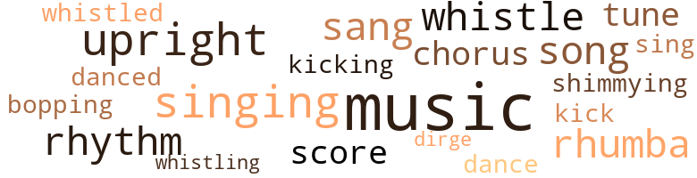
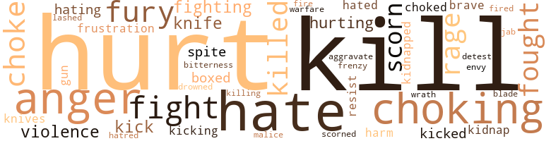

Naked Fear (The), by Offord, Carl Ruthven (1954)
49 music-related terms matched in this text.
Most frequent terms in this topic: music (10); singing (4); upright (4); whistle (3); rhythm (3)
bop.v.01
Definition: dance the bebop
| word | sentence |
|---|---|
| bopping | He kept jolting her , jolting , jolting , her head bopping against the wall with each violent jolt . |
chorus.n.01
Definition: any utterance produced simultaneously by a group
| word | sentence |
|---|---|
| chorus | The girls giggled in chorus . |
| chorus | Blues music sounded through the midget radio - a chorus of moaning voices . |
dance.v.03
Definition: skip, leap, or move up and down or sideways
| word | sentence |
|---|---|
| dance | But still he said nothing , waiting for her to speak , his white-balled eyes seeming to flit and dance to some innate rhythm of his strange intensity . |
| danced | His eyes danced crazily . |
dirge.n.01
Definition: a song or hymn of mourning composed or performed as a memorial to a dead person
| word | sentence |
|---|---|
| dirge | The wind had risen strong , whistling a dirge through the tenement blocks . |
kick.v.04
Definition: kick a leg up
| word | sentence |
|---|---|
| kicking | When we do a li ' l good deed we do n't need to go kicking it over . " |
| kick | He could kick himself for what he had done . |
music.n.01
Definition: an artistic form of auditory communication incorporating instrumental or vocal tones in a structured and continuous manner
| word | sentence |
|---|---|
| music | The boom-boom music came to an end on the big shiny radio , followed by a news flash that said no clues or new developments had come up in the kidnap case . |
| music | Rhumba music bounced out of it . |
| music | The rhumba music kept on , a soft bounce , like gloved hands patting a round belly . |
| music | Justine was about to speak when the rhumba music on the radio was abruptly cut off and in tremulous excitement the announcer declared the D.A. 's baby and nurse were returned unharmed . |
| music | When the inside door came open , there was a brief blare of movie music . |
| music | The door to the orchestra would come open to let out a crackle of screen voices , a moan , a scrunching of screen music . |
| music | In due time the movie was over for the night and the patrons were thronging out in haste to the coarse blaring of usher-out music . |
| music | When they were gone and the blaring music stilled , a chasm of peace settled . |
| music | Blues music sounded through the midget radio - a chorus of moaning voices . |
| music | The radio was on : voice , music , a man hawking cigarettes , a woman singing about love . |
rhythm.n.04
Definition: the arrangement of spoken words alternating stressed and unstressed elements
| word | sentence |
|---|---|
| rhythm | But still he said nothing , waiting for her to speak , his white-balled eyes seeming to flit and dance to some innate rhythm of his strange intensity . |
| rhythm | She rocked her large graying head to the tune of the rhumba rhythm . |
| rhythm | Half-shutting her eyes Ma Quilly dropped to her knees beside the couch and began to pray fervently , her thick body rocking from side to side in the rhythm of a pendulum . |
rumba.n.01
Definition: syncopated music in duple time for dancing the rumba
| word | sentence |
|---|---|
| rhumba | The rhumba music kept on , a soft bounce , like gloved hands patting a round belly . |
| rhumba | She rocked her large graying head to the tune of the rhumba rhythm . |
| rhumba | Justine was about to speak when the rhumba music on the radio was abruptly cut off and in tremulous excitement the announcer declared the D.A. 's baby and nurse were returned unharmed . |
score.n.02
Definition: a written form of a musical composition; parts for different instruments appear on separate staves on large pages
| word | sentence |
|---|---|
| score | " What 's the score , baby ? |
| score | What 's the score ? |
shimmy.v.02
Definition: dance a shimmy
| word | sentence |
|---|---|
| shimmying | She went on without hastening , the black headline shimmying in her mind . |
sing.v.02
Definition: produce tones with the voice
| word | sentence |
|---|---|
| sing | They were terrific dancers and they could sing like mad . |
| sang | " God bless you , son , " Ma Quilly sang out . |
| sang | " Amen ! " sang out Sam . |
| sang | Through the midget radio an outdoor baritone sang a hillbilly tune about a runaway horse . |
singing.n.01
Definition: the act of singing vocal music
| word | sentence |
|---|---|
| singing | Ma Quilly next door had stopped singing . |
| singing | She loved it on sight , her senses meshing in a singing chord of desire . |
| singing | But in a moment that was over and a male singer came on singing : Baby , I 'm Broken-Hearted Over You . |
| singing | The radio was on : voice , music , a man hawking cigarettes , a woman singing about love . |
song.n.01
Definition: a short musical composition with words
| word | sentence |
|---|---|
| song | The song on the midget radio ended . |
| song | It was as if a song , unheard , were breaking from her silent lips . |
| song | Then , abruptly , the love song was cut off to make way for a special announcement . |
tune.n.01
Definition: a succession of notes forming a distinctive sequence
| word | sentence |
|---|---|
| tune | She rocked her large graying head to the tune of the rhumba rhythm . |
| tune | Through the midget radio an outdoor baritone sang a hillbilly tune about a runaway horse . |
upright.n.02
Definition: a piano with a vertical sounding board
| word | sentence |
|---|---|
| upright | Glancing back into the room she saw George sitting upright in the bed , his eyes glazed in terror . |
| upright | George leaped upright in the bed . |
| upright | The figures stood upright in the air before Amy 's eyes ; then they bellied and shimmied . |
| upright | He sat bolt upright . |
whistle.v.01
Definition: make whistling sounds
| word | sentence |
|---|---|
| whistled | " You used to get scared and hold me tight every time the train whistled ? |
| whistling | The wind had risen strong , whistling a dirge through the tenement blocks . |
| whistle | The whistle of a train sounded shrilly in his ears and he was on his back , flat on the ground , the ground wet and muddy , and all around , pressing in were the black faces in G.I. uniforms . |
| whistle | the train whistle shrieking , oueeeeeeeee ! |
| whistle | As they drew near he could ' only shut his eyes and scream to God through the howling whistle of the train . |
182 violence-related terms matched in this text.
Most frequent terms in this topic: hurt (16); hate (14); kill (14); choking (12); anger (11)
anger.n.01
Definition: a strong emotion; a feeling that is oriented toward some real or supposed grievance
| word | sentence |
|---|---|
| anger | Her face reddened in anger . |
| anger | For a time she walked blindly , her anger seething , frustration stretching into a dark endless alley . |
| Anger | Anger swelled through her fears , whipped by shame , by humiliation . |
| anger | Amy moved upon him slowly , anger and contempt foaming in her eyes . |
| anger | At that moment George 's anger snapped . |
| Anger | Anger stirred in him almost at once . |
| anger | Her heart fluttered between rising anger and a sense of guilt . |
| anger | " I do n't give a damn about what you 'll do , " Amy snapped in a sudden burst of anger . |
| anger | He was angry in a flash , and yet confused about his own anger . |
| anger | After a while his anger subsided and he brought his attention back to the child . |
| anger | She spoke in anger and hate . |
| anger | In anger she rushed to him . |
| anger | In an instant Amy 's anger gave way to apprehension . |
box.v.03
Definition: engage in a boxing match
| word | sentence |
|---|---|
| boxed | The boxed exclusive on the " mysterious blonde " had been dropped from the latest editions , she discovered . |
| boxed | Or boxed up like rats in a cage , running round and round , trapped bumping noses , bumping one another and hating one another and wanting to kill without knowing why and not giving damn about themselves or anybody else . |
| boxed | The headlines leered at Amy and George : Challenge to Law and Order ... An Indignant Public ... An Aroused Citizenry . . . There were pictures , exclusives , boxed specials . |
contemn.v.01
Definition: look down on with disdain
| word | sentence |
|---|---|
| scorn | " Your responsibility ? " she said with scorn . |
| scorn | Then in an instant it vanished and was replaced by a smearing of scorn . |
| scorn | They stood for possessions still his ; they were bound to him by affection and without the bitter searing of scorn and ridicule . |
| scorn | He searched Justine 's eyes for scorn of ridicule that would come from the knowledge that his child was colored . |
| scorned | She had been whipped ; she had been rejected , humiliated ; she had been scorned . |
craze.n.02
Definition: state of violent mental agitation
| word | sentence |
|---|---|
| frenzy | But in the next instant it shrieked in a new , desperate frenzy , its tiny fists pawing the air . |
drown.v.04
Definition: kill by submerging in water
| word | sentence |
|---|---|
| drowned | A mumble came from George , drowned wet in his throat , a groan rather than words . |
envy.n.01
Definition: a feeling of grudging admiration and desire to have something that is possessed by another
| word | sentence |
|---|---|
| envy | She watched in envy as he nonchalantly swung into the Plaza in a muffled flourish of grace and wealth , and she thought of George . |
exacerbate.v.02
Definition: exasperate or irritate
| word | sentence |
|---|---|
| aggravate | " Do n't aggravate me , Amy . |
fight.n.05
Definition: a boxing or wrestling match
| word | sentence |
|---|---|
| fight | " I 've been doing the job fight along , " George pleaded . |
fight.v.02
Definition: fight against or resist strongly
| word | sentence |
|---|---|
| fighting | " I 'm tired of fighting . " |
| fought | Amy was frightened , though she fought against admitting it even to herself . |
| fighting | " You and your husband been fighting ? " |
| fighting | " Like you and him fighting . " |
| fight | I had to fight my way out . |
| fought | She fought to protect George and help him to get better . |
| fight | The idea ai n't to hate and fight . |
| fight | On leaving the theatre he walked rapidly , turning up the collar of his coat to fight off the cold . |
| fight | He had to fight to contain himself . |
| fought | It somehow instantly made him think of death and he fought to suppress a shudder . |
| fighting | " You been fighting with your wife ? " |
| fought | It coughed and spluttered under the thickness of the blanket and it fought pitifully to struggle free . |
| fight | If their minds are twisted and ugly I 'll fight all the harder to keep mine from becoming like theirs . |
| fought | He fought frantically to rise up , to run , to escape , but he could n't stir . |
| fight | " Listen , George , I 've got to fight for myself . |
frustration.n.03
Definition: a feeling of annoyance at being hindered or criticized
| word | sentence |
|---|---|
| frustration | For a time she walked blindly , her anger seething , frustration stretching into a dark endless alley . |
| frustrations | They faced each other in hate , the grinning frustrations of the world coming to a boil in their eyes . |
fury.n.01
Definition: a feeling of intense anger
| word | sentence |
|---|---|
| fury | With bated fury he glowered into her fear-stretched eyes ; then he flung her off in a blind heave of violence . |
| fury | The bastard , she cursed with renewed fury , after all she had sacrificed for him . |
| fury | She wheeled and strode out in fury , leaving Ma Quilly behind . |
| fury | He tightened his hands around her neck , hatefully , murderously , squeezing with the strength of blind fury . |
| rage | He walked aimlessly , the raw cold nibbling at the fringe of his rage . |
| rage | Then it bit inward , deep , deep , till the rage itself was gone almost to nothing . |
| rage | Trembling with rage and uncertainty , he replaced the child in the crib . |
| fury | When the cold wind had finally sapped the edge of her fury , she made her way back to the room . |
| Rage | Rage surged upon him , filling his throat , starting off again the tapping in his head . |
| rage | George leapt up , his large hands doubled , his body trembling with rage . |
| fury | Instead , her fury rose . |
gag.v.06
Definition: cause to retch or choke
| word | sentence |
|---|---|
| choking | " You 're choking me , George . |
| choking | " You 're choking me , George . |
| choking | Jesus Christ , you 're choking me . " |
| choking | " You were choking me , George . |
| choking | You were choking me . " |
| choking | And yet , what if he had n't stopped choking her ? |
| choking | The baby coughed in its sleep and once it uttered a choking gasp . |
| choking | He sobbed in his sleep and wetted the bed , and at times he woke up choking and screaming in terror . |
| choking | " The place was choking me . |
| choked | When he lifted out the infant , it screamed and choked , its little body doubling with cramps . |
| choking | She forced doses of olive oil , then flour , down the choking , spluttering throat . |
| choked | It gulped and choked for an instant , its little mouth extended . |
| choking | She stood frozen in the horror of her own act , the baby 's little voice reduced to a muffled choking gasp . |
| choke | He grabbed her by the throat and started to choke her . |
| choking | Then suddenly , as if in disgust , he stopped choking her and violently heaved her away . |
| Choke | " Choke me ! " she screamed at him . |
| choke | " You want to choke me , do n't you ? |
| choke | Come on , choke me ! |
| Choke | Choke me , you lousy sonofabitch ! |
| Choke | Choke me ! " |
gun.n.01
Definition: a weapon that discharges a missile at high velocity (especially from a metal tube or barrel)
| word | sentence |
|---|---|
| guns | A cow-gal was twanging about blazing guns under a Texas sky . |
| gun | At gun point he had forced the aged nurse to accompany him with the child to a small hotel upstate . |
hate.n.01
Definition: the emotion of intense dislike; a feeling of dislike so strong that it demands action
| word | sentence |
|---|---|
| hate | One paper commented that the absence of a ransom note , so far , gave support to the theory that the kidnapping was motivated by fanatical hate . |
| hate | They faced each other in hate , the grinning frustrations of the world coming to a boil in their eyes . |
| hatred | His instant reaction was one of fear and hatred , but that quickly sank , like a stone under water . |
| hate | She backed away , her eyes swimming with fright , with hate , with guilt . |
| hate | She spoke in anger and hate . |
| hate | There was too much fire in Amy 's eyes , too much hate . |
| hate | A man and a woman came together - whoever they were , in love or not , with hate , even - and a child came . |
| hate | There was more hate than love . |
hate.v.01
Definition: dislike intensely; feel antipathy or aversion towards
| word | sentence |
|---|---|
| hated | He hated the idea of having to give up the child . |
| hate | " I want to get out for some air but I hate to leave you alone , " she said to George . |
| hating | She lingered , eyeing the sleeping baby , hating it for its intrusion . |
| hate | The idea ai n't to hate and fight . |
| hating | Or boxed up like rats in a cage , running round and round , trapped bumping noses , bumping one another and hating one another and wanting to kill without knowing why and not giving damn about themselves or anybody else . |
| hates | That Sam is crazy , and that Justine hates me . " |
| hate | While he did n't hate them for being Negroes they nevertheless were Negroes . |
| hate | " George , I do n't want you to hate me . " |
| hate | " I do n't hate you , " he said wearily . |
| hated | How she hated the sight of it . |
| hate | " Right now I hate you . |
| detest | Right now you 're a vicious hateful bitch and I detest you . " |
| hate | He forced himself to inch away from her , remembering what she had so deliberately done , and trying to hate her for it . |
| hating | Everybody was hating , hating , hating . |
hurt.v.04
Definition: cause damage or affect negatively
| word | sentence |
|---|---|
| hurt | Deep in the muck of her own torment , she wanted to hurt and be hurt . |
| hurt | " I did n't intend to hurt it , " Amy said from the table , her voice miserably leaden and toneless . |
injury.n.01
Definition: any physical damage to the body caused by violence or accident or fracture etc.
| word | sentence |
|---|---|
| harm | Did n't mean no harm by asking . " |
| hurt | This left her with a feeling of disappointment so keen it was almost a hurt . |
| harm | A news story beside a photograph of the D.A. 's wrinkled mother said the old lady was amazingly calm in the face of the tragedy , and expressed confidence that no harm would come to the child . |
| hurt | Then just ahead they suddenly saw a little colored guy sitting on the wet ground , hurt already , his head in a crude bandage , his G.I. cap on the ground beside him . |
jab.n.02
Definition: a quick short straight punch
| word | sentence |
|---|---|
| jab | Suddenly she gritted her teeth and he noticed the motion of the blade change to an abrupt jab . |
kick.v.04
Definition: kick a leg up
| word | sentence |
|---|---|
| kicking | When we do a li ' l good deed we do n't need to go kicking it over . " |
| kick | He could kick himself for what he had done . |
kick_back.v.02
Definition: spring back, as from a forceful thrust
| word | sentence |
|---|---|
| kick | Abruptly , the horse heaved and began violently to kick and splash and romp toward the bank . |
| kicks | Her whole life had been a slumming mess of knocks and kicks . |
| kicked | George sank into the big armchair and kicked off his shoes . |
| kicked | She plunged the child into the freezing water and held it below as its body contracted and kicked . |
| kicked | The child doubled , kicked spasmodically and uttered a sharp piercing wail . |
| kick | If you ca n't act right I 'm gon na have to kick your ass from here to the sidewalk . |
| kicking | Think you could start kicking me around already , do n't you ? |
kidnap.v.01
Definition: take away to an undisclosed location against their will and usually in order to extract a ransom
| word | sentence |
|---|---|
| kidnap | The boom-boom music came to an end on the big shiny radio , followed by a news flash that said no clues or new developments had come up in the kidnap case . |
| kidnapped | Tell you what , he even had the gall to hint that the child here might be that poor kidnapped baby . |
| kidnap | Maybe it 's the kidnap baby , she said . |
| kidnapped | In a voice tensed with excitement , the radio announcer declared the baby daughter of the District Attorney had been kidnapped . |
kill.v.10
Definition: cause the death of, without intention
| word | sentence |
|---|---|
| kill | " I could kill you for a thing like that , Amy . |
| kill | " I 'll kill you . |
| kill | I 'll kill you . " |
| kill | " Touch me and I 'll kill you , " she cried . |
| kill | " Touch me and I 'll kill you , so help me God ! " |
| killed | " I could have killed you for that stunt you pulled last night . |
| kill | Or boxed up like rats in a cage , running round and round , trapped bumping noses , bumping one another and hating one another and wanting to kill without knowing why and not giving damn about themselves or anybody else . |
| kill | Go on , hurt me , kill me . |
| kill | Why do n't you kill me ? " |
| kill | " I 'm not going to kill you . |
| killed | He could have killed her . |
| killed | " I should have killed him , I guess . |
| kill | Touch me and I 'll kill you ! " |
| kill | " Why do n't you kill him ? " |
| kill | I could kill myself for doing a thing like that . " |
| killed | They hunted , cut and killed in the huge green-grassed park in back of the Red Cross Canteen and in the amusement arena which the people called The Carnival , and in the alleys behind the pubs , and in the green lush woodlands along steep , wide White Lady Hill . |
| killing | " They ai n't gon na quit till we start killing 'em wholesale , " Red said . |
| killed | From the hospital in England he had written a note to his sisters in which he had said : Tell Tess I was killed in an air raid . |
| kill | I 'll kill you ! " |
| Kill | Kill me . |
| Kill | Kill me ! " |
| kill | She had tried to kill it and that was beyond understanding and forgiveness . |
knife.n.02
Definition: a weapon with a handle and blade with a sharp point
| word | sentence |
|---|---|
| knife | It would have been kinder if she 'd stuck a knife in his guts . |
| knife | Was he holding a knife ? |
| knife | He would have no chance at all against a knife . |
| knives | But the colored guys came back with knives . |
| knife | Every man carried a knife on pass , including himself . |
| knives | Then he glimpsed through the rain the pursuing black faces in the familiar uniform as they came rushing down the steep embankment , knives flashing in their hands . |
malice.n.01
Definition: feeling a need to see others suffer
| word | sentence |
|---|---|
| malice | Her mouth watered with contempt , and there was a taste , too , of malice - but she could n't say against whom or why . |
| spite | In spite of her fear she persisted . |
| spite | " In spite of everything I love you . " |
| spite | In spite of himself the sight of Amy 's nude breasts set off a steely vibration that strummed through his frail , tired body . |
open_fire.v.01
Definition: start firing a weapon
| word | sentence |
|---|---|
| fire | The breasty redhead said , " Why 'd they fire Johnny ? " |
| fired | " Then he fired you ? " |
pain.v.02
Definition: cause emotional anguish or make miserable
| word | sentence |
|---|---|
| hurt | George , no doubt , was simply another poor guy , hurt as only poor guys get hurt . |
| hurting | " You 're hurting me , " she said tightly . |
| hurting | " You 're hurting me , Georgel Goddamn it ! |
| hurting | You 're hurting me ! " |
| hurting | " Let me go - you 're hurting me ! " |
| hurt | " You want me to hurt you but I do n't intend to . |
| hurt | " Yeah , yeah , hurt me ! |
| hurt | Go on , hurt me , kill me . |
| hurt | He had hurt her physically and could n't understand how he had brought himself to do it . |
| hurt | Deep in the muck of her own torment , she wanted to hurt and be hurt . |
| hurt | I do n't want to hurt you . " |
| hurt | Taking up the child , George realized that it had not been hurt but was frightened . |
| hurt | " You 're going to make me hurt you , Amy . |
| Hurt | " Hurt me , " she breathed mockingly . |
| hurt | She was all right , George saw ; she had not been hurt . |
| hurt | " If I hurt you it 's because I was hurt . |
| hurt | " If I hurt you it 's because I was hurt . |
resentment.n.01
Definition: a feeling of deep and bitter anger and ill-will
| word | sentence |
|---|---|
| bitterness | " That 's all right , " George said with bitterness . |
resist.v.04
Definition: withstand the force of something
| word | sentence |
|---|---|
| resist | Instinctively , he wanted to resist . |
| resist | He had no strength to resist . |
sword.n.01
Definition: a cutting or thrusting weapon that has a long metal blade and a hilt with a hand guard
| word | sentence |
|---|---|
| blade | He spied in her hand a glittering razor blade . |
violence.n.01
Definition: an act of aggression (as one against a person who resists)
| word | sentence |
|---|---|
| violence | With bated fury he glowered into her fear-stretched eyes ; then he flung her off in a blind heave of violence . |
| violence | She saw Slim 's doubled fists , the hot violence in his eyes , his set , tight mouth . |
| violence | He watched her , almost impassively , himself floundering in the sweat of violence . |
| violence | There were cut out spaces in the magazine , for Amy always took the precaution of removing pictures of violence or pictures of Negroes . |
war.n.03
Definition: an active struggle between competing entities
| word | sentence |
|---|---|
| warfare | Then it became open warfare . |
weather.v.01
Definition: face and withstand with courage
| word | sentence |
|---|---|
| brave | A real honest-to-God black nigger , brave and audacious as could be , facing her , his lips wet for her . |
| brave | " Come on , brave guy , hit me some more ! |
whip.v.04
Definition: strike as if by whipping
| word | sentence |
|---|---|
| lashed | Then her voice suddenly lashed at him . |
wrath.n.01
Definition: intense anger (usually on an epic scale)
| word | sentence |
|---|---|
| wrath | Amy backed from his wrath . |
105 religion-related terms matched in this text.
Most frequent terms in this topic: Jesus (32); Christ (29); God (18); church (11); angel (3)
baptize.v.01
Definition: administer baptism to
| word | sentence |
|---|---|
| christened | " I guess she ai n't been christened yet , has she ? " |
| christened | The cook had been in the apartment throughout the day but had heard nothing to cause suspicion ... The building 's maintenance crew had observed no strangers , had heard nothing unusual . . . The infant , next Sunday , was to be christened , Anna Laurcen . |
church.n.02
Definition: a place for public (especially Christian) worship
| word | sentence |
|---|---|
| church | She was sorry the church was concerning itself with the affair . |
| church | She did n't want to feel she was deceiving the church . |
| church | Got an important meeting over in the church . |
| church | Flat on her back on the bouncy bed , her eyes fever-bright with joy , Amy decided she would go to church . |
| church | And she would make a present to the church . |
| church | Next Sunday she 'd go to church . |
| church | They might appreciate it more if she made an offering to their church . |
| church | Suzanne - his hard-working mother - ran the house , the church committees . |
| church | But nobody knew how sick she really was till she dropped dead Sunday morning , two blocks from the church . |
church.n.04
Definition: the body of people who attend or belong to a particular local church
| word | sentence |
|---|---|
| church | When she got her hands on the dough she 'd see to it that the church got a donation . |
| church | To what kind of church did Ma Quilly belong ? |
| Church | Church bells were ringing in downtown New York . |
eden.n.01
Definition: any place of complete bliss and delight and peace
| word | sentence |
|---|---|
| heaven | In her time she 'd known more than a few white cafeteria gals who really stank to high heaven . |
god.n.03
Definition: a man of such superior qualities that he seems like a deity to other people
| word | sentence |
|---|---|
| God | She watched the child and listened to its wheezy breathing and uttered a silent prayer to God that it would n't take seriously ill . |
| God | God bless you , honey . " |
| God | That being the case , I try to live in the light of the Lord , God Jesus . " |
| God | God was being good to her now . |
| God | She hoped to God , George had n't blabbed his drunken mouth off in the bar . |
| God | God 's angel is over you this minute . " |
| God | God is watching . " |
| God | God willing , she 's gon na be all right . |
| God | We 're sisters and brothers in the sight of God . " |
| God | That 's the God way . " |
| God | He would have to be a man , by God I The child was his . |
| God | " I think you people need to come closer to God . |
| God | Let 's join the Spirit of God together . " |
| God | " Join with me , sister , in the Spirit of God . |
| God | Seeing only the usual aged women who sat around sipping their stouts and half - ' n-half , Red ordered two American whiskies with half - ' n-half chaser and told the tall , thin , gentlemanly proprietor he should leave his umbrella behind and visit America for a sampling of God 's weather . |
| God | As they drew near he could ' only shut his eyes and scream to God through the howling whistle of the train . |
| God | Come touch the heart of God . |
| God | " Come , son , God is waiting . |
jesus.n.01
Definition: a teacher and prophet born in Bethlehem and active in Nazareth; his life and sermons form the basis for Christianity (circa 4 BC - AD 29)
| word | sentence |
|---|---|
| Jesus | " Jesus Christ ! " he said finally . |
| Jesus | " Jesus Christ , George ! " |
| Jesus | Jesus Christ ! |
| Jesus | " Jesus Christ ! |
| Jesus | Jesus Christ , you 're choking me . " |
| Jesus | At the bottom of the stairway she followed a turning to the right and then stood in trembling fear before a brown-painted door with a double name slot that read : Ma Quilly , Daughter of Jesus Benjamin Jones , Janitor Amy swallowed hard . |
| Jesus | Jesus Christ ! |
| Jesus | That being the case , I try to live in the light of the Lord , God Jesus . " |
| Jesus | " Jesus Christ ! |
| Jesus | Jesus Christ , Amy , they 're over there . " |
| Jesus | Jesus Christ ! |
| Jesus | " Jesus Christ , George , we 're going to be stinking rich . " |
| Jesus | " Jesus Christ ! |
| Jesus | " Jesus Christ ! " |
| Jesus | Jesus Christ ! " |
| Jesus | Jesus Christ ! |
| Jesus | " Jesus Christ ! " |
| Jesus | Jesus Christ ! |
| Jesus | Jesus Christ ! |
| Jesus | Jesus Christ ! |
| Jesus | Jesus Christ ! |
| Jesus | Jesus Christ ! |
| Jesus | " Jesus Christ ! |
| Jesus | The darkest , brightest , prettiest eyesl Jesus Christ ! |
| Jesus | Jesus Christ ! |
| Jesus | Jesus Christ ! |
| Jesus | Jesus Christ ! |
| Jesus | The good Lord Jesus is here talking to you , son . |
| Jesus | " Come give a hand to your poor children , Lord Jesus . |
| Jesus | Jesus Christ ! |
| Jesus | " Jesus Christ , Georgel Have n't I done enough to prove I love you ? " |
| Jesus | Jesus Christ ! " |
messiah.n.01
Definition: any expected deliverer
| word | sentence |
|---|---|
| Christ | " Jesus Christ ! " he said finally . |
| Christ | " Jesus Christ , George ! " |
| Christ | Jesus Christ ! |
| Christ | " Jesus Christ ! |
| Christ | Jesus Christ , you 're choking me . " |
| Christ | Jesus Christ ! |
| Christ | It was his eyes , more than even his broad honest forehead , that had made her think of Christ that night when she first saw George . |
| Christ | " Jesus Christ ! |
| Christ | Jesus Christ , Amy , they 're over there . " |
| Christ | Jesus Christ ! |
| Christ | " Jesus Christ , George , we 're going to be stinking rich . " |
| Christ | " Jesus Christ ! |
| Christ | " Jesus Christ ! " |
| Christ | Jesus Christ ! " |
| Christ | Jesus Christ ! |
| Christ | " Jesus Christ ! " |
| Christ | Jesus Christ ! |
| Christ | Jesus Christ ! |
| Christ | Jesus Christ ! |
| Christ | Jesus Christ ! |
| Christ | Jesus Christ ! |
| Christ | " Jesus Christ ! |
| Christ | The darkest , brightest , prettiest eyesl Jesus Christ ! |
| Christ | Jesus Christ ! |
| Christ | Jesus Christ ! |
| Christ | Jesus Christ ! |
| Christ | Jesus Christ ! |
| Christ | " Jesus Christ , Georgel Have n't I done enough to prove I love you ? " |
| Christ | Jesus Christ ! " |
prayer.n.01
Definition: the act of communicating with a deity (especially as a petition or in adoration or contrition or thanksgiving)
| word | sentence |
|---|---|
| Prayers | The stoops were shouldered by tiny candy stores and newsstands , and she spied on a newsstand a headline that said : Churches To Offer Prayers For Little Anna Laureen . |
| prayers | Let them go on with their prayers . |
| prayer | She watched the child and listened to its wheezy breathing and uttered a silent prayer to God that it would n't take seriously ill . |
| prayer | Let 's say a li ' l prayer together . |
sacrifice.v.04
Definition: make a sacrifice of; in religious rituals
| word | sentence |
|---|---|
| sacrificed | The bastard , she cursed with renewed fury , after all she had sacrificed for him . |
| sacrificed | After what I 've sacrificed for you ? |
saint.n.02
Definition: person of exceptional holiness
| word | sentence |
|---|---|
| angel | Your guardian angel must 've guided you to it , George . |
| angel | God 's angel is over you this minute . " |
| angel | Be sweet lil angel . |
satan.n.01
Definition: (Judeo-Christian and Islamic religions) chief spirit of evil and adversary of God; tempter of mankind; master of Hell
| word | sentence |
|---|---|
| devil | Seem like they fear a black skin like the devil fears the name of the Lord , though it do n't make no sense . |
worship.n.02
Definition: a feeling of profound love and admiration
| word | sentence |
|---|---|
| adoration | And the adoration of all the crappy little people around : the bus drivers , janitors , the cops , taxi drivers , the cafeteria dish-snatchers like herself . |